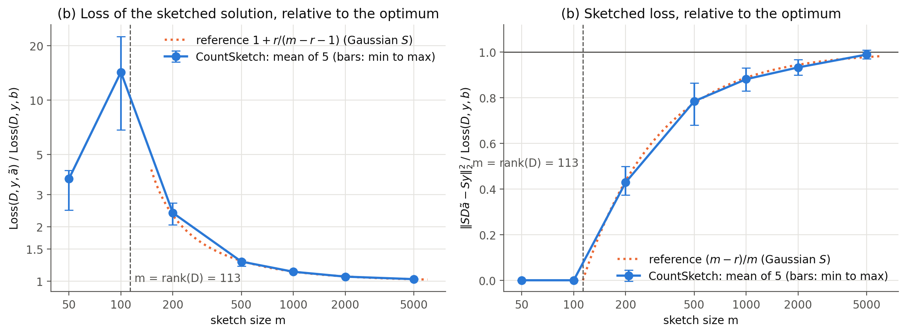
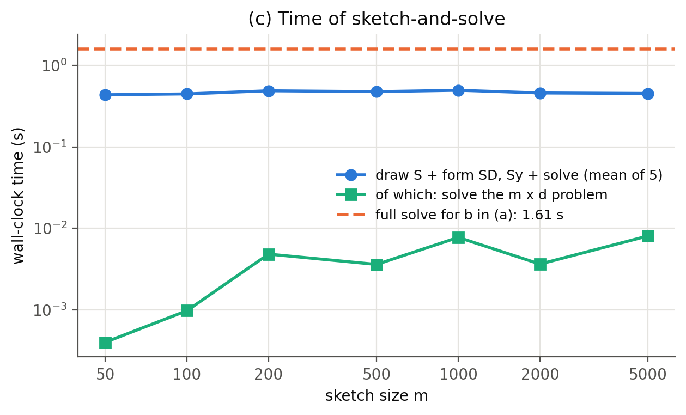
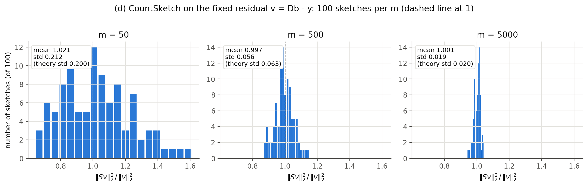

fetch_kddcup99(subset=None, as_frame=True): 494,021 connections, 41 features.protocol_type (3 values), service (66) and flag (11) into 80 columns, and convert the other 38 features to float: 118 columns.num_outbound_cmds and is_host_login are 0 on every row, leaving 116 columns.y = (kdd.target != b'normal.').to_numpy(dtype=float), so $y_i=1$ for an attack.| quantity | value |
|---|---|
| rows n (connections) | 494,021 |
| columns after one-hot encoding (38 numeric + 3 + 66 + 11) | 118 |
| constant columns dropped in step (ii) | num_outbound_cmds, is_host_login |
| columns d of D | 116 |
| rank(D) | 113 |
| attacks (y = 1) / normal (y = 0) | 396,743 / 97,278 (80.3% attacks) |
Why rank(D) = 113 and not 116. The one-hot columns stay 0/1 after rescaling, and three exact linear relations hold:
the protocol_type, service and flag columns each add up to the all-ones vector (2 independent relations),
and protocol_type_icmp equals the sum of the six ICMP-only service columns (eco_i, ecr_i, red_i, tim_i, urh_i, urp_i).
The notebook checks all three. So $r=\operatorname{rank}(D)=116-3=113$. The all-ones vector lies in the column space of $D$,
so the model already contains an intercept. That is why the question says no intercept column is needed.
We replace $\min_a\|Da-y\|_2^2$ (with $n$ = 494,021 equations) by $\min_a\|SDa-Sy\|_2^2$ (with only $m$ equations). All the vectors $Da-y$ lie in $W=\operatorname{span}(\text{columns of }D,\ y)$, a fixed subspace of dimension at most $r+1$.
Lemma (subspace embedding ⇒ near-optimal solution). Suppose that for every $w\in W$, $(1-\varepsilon)\|w\|^2\le\|Sw\|^2\le(1+\varepsilon)\|w\|^2$. Then $\text{Loss}(D,y,\tilde a)\le\frac{1+\varepsilon}{1-\varepsilon}\,\text{Loss}(D,y,b)$.
Proof, in three steps. (1) $D\tilde a-y\in W$, so $(1-\varepsilon)\|D\tilde a-y\|^2\le\|S(D\tilde a-y)\|^2$. (2) $\tilde a$ minimises the sketched loss, so $\|S(D\tilde a-y)\|^2\le\|S(Db-y)\|^2$. (3) $Db-y\in W$, so $\|S(Db-y)\|^2\le(1+\varepsilon)\|Db-y\|^2$. Chain (1)–(3) and divide by $1-\varepsilon$. □
numpy.linalg.lstsq(D, y, rcond=None) on all 494,021 × 116 entries.
Because $\operatorname{rank}(D)=113<116$, the minimiser is not unique. lstsq returns the minimum-norm one, and the minimum loss is unique.time.perf_counter; repeat 5 times and average.| quantity | value |
|---|---|
| Loss(D, y, b) = ‖Db − y‖22 | 2,949.7888 |
| mean squared residual Loss / n | 0.005971 (RMS 0.0773) |
| ‖y − ȳ‖2 (loss of the best constant) | 78,122.9 |
| ‖b‖2 (minimum-norm solution) | 135.29 |
time to compute b with lstsq, 5 runs | 1.713, 1.528, 1.531, 1.669, 1.587 s |
| mean time | 1.606 s |
Answer (a). $\text{Loss}(D,y,b)=$ 2,949.79, and computing $b$ takes 1.61 s (mean of 5 runs). For scale: predicting the constant $\bar y$ has loss 78,122.9, so the linear fit explains $1-\text{Loss}/\|y-\bar y\|^2=0.962$ of the variance of $y$.
np.add.at(SD, h, sigma[:, None] * D). The same is done for $y$. A unit test in the notebook checks this against an explicit dense $S$.lstsq.| m | mean ratio | min | max | ref. 1+r/(m−r−1) | mean sketched loss | sketched / Loss(b) | ref. (m−r)/m | rank(SD) | σmin(SD) | ‖ã‖ |
|---|---|---|---|---|---|---|---|---|---|---|
| 50 | 3.685 | 2.463 | 4.101 | — | 5.01 × 10-24 | 0.000 | 0.000 | 50 | 5.405 | 4.7 |
| 100 | 14.304 | 6.848 | 22.489 | — | 4.43 × 10-23 | 0.000 | 0.000 | 100 | 0.382 | 24.4 |
| 200 | 2.384 | 2.050 | 2.706 | 2.314 | 1,264.3 | 0.429 | 0.435 | 113 | 0.070 | 177.6 |
| 500 | 1.281 | 1.211 | 1.306 | 1.293 | 2,312.5 | 0.784 | 0.774 | 113 | 0.094 | 149.4 |
| 1000 | 1.125 | 1.113 | 1.136 | 1.128 | 2,597.2 | 0.880 | 0.887 | 113 | 0.101 | 142.9 |
| 2000 | 1.058 | 1.049 | 1.075 | 1.060 | 2,749.1 | 0.932 | 0.944 | 113 | 0.104 | 134.5 |
| 5000 | 1.024 | 1.022 | 1.027 | 1.023 | 2,915.7 | 0.988 | 0.977 | 113 | 0.105 | 134.3 |
For comparison: $\sigma_{\min}(D)=0.106$ and $\|b\|=135.3$. The two "ref." columns are the exact means for a dense Gaussian $S$ (derived in the box below). CountSketch tracks them closely.

Answer (b): below m = rank(D) = 113 (m = 50, 100).
lstsq just returns the minimum-norm point of a $(116-m)$-dimensional family of exact solutions.Answer (b): above m = rank(D) (m = 200, 500, 1000, 2000, 5000).
Where the reference curves come from (dense Gaussian S with N(0,1/m) entries, m > r + 1). Let $U\in\mathbb{R}^{n\times r}$ be an orthonormal basis of $\operatorname{col}(D)$, $Db=Uc_b$, and let $v=Db-y$, which is orthogonal to $\operatorname{col}(D)$.
| m | draw S (ms) | form SD, Sy (ms) | solve (ms) | total (s) | speed-up vs (a) |
|---|---|---|---|---|---|
| 50 | 4.2 | 433 | 0.4 | 0.438 | 3.7× |
| 100 | 7.1 | 440 | 1.0 | 0.448 | 3.6× |
| 200 | 6.7 | 478 | 4.8 | 0.490 | 3.3× |
| 500 | 5.9 | 469 | 3.6 | 0.478 | 3.4× |
| 1000 | 5.4 | 484 | 7.8 | 0.497 | 3.2× |
| 2000 | 4.9 | 452 | 3.7 | 0.461 | 3.5× |
| 5000 | 4.0 | 442 | 8.1 | 0.454 | 3.5× |

Answer (c). Sketch-and-solve takes 0.44–0.50 s for every m, against 1.61 s for the full solve: about 3.2–3.7× faster.
np.add.at works one element at a time (about 8 ns per entry).
The gap would widen with larger $d$, or with sparse $D$, where the sketch costs $O(\operatorname{nnz}(D))$.
| m | mean | std | theory std √(2/m · (1 − ‖v‖44/‖v‖24)) | min | max |
|---|---|---|---|---|---|
| 50 | 1.0206 | 0.2117 | 0.2000 | 0.644 | 1.611 |
| 500 | 0.9966 | 0.0562 | 0.0632 | 0.870 | 1.150 |
| 5000 | 1.0014 | 0.0195 | 0.0200 | 0.942 | 1.042 |
Mean and variance of a CountSketch on a fixed v. Write $\delta_{ik}=\mathbf{1}[h(i)=h(k)]$. Then $$\|Sv\|^2=\sum_{j=1}^m\Big(\sum_{i:h(i)=j}\sigma_iv_i\Big)^2=\sum_i v_i^2+\sum_{i\ne k}\delta_{ik}\,\sigma_i\sigma_k\,v_iv_k .$$ Since $\mathbb{E}[\sigma_i\sigma_k]=0$ for $i\ne k$, $\mathbb{E}\|Sv\|^2=\|v\|^2$: CountSketch is unbiased. The cross terms of different pairs are uncorrelated (random signs), and $\Pr[h(i)=h(k)]=1/m$, so $$\operatorname{Var}\|Sv\|^2=4\sum_{i<k}\frac{v_i^2v_k^2}{m}=\frac{2}{m}\big(\|v\|_2^4-\|v\|_4^4\big),\qquad \operatorname{std}\frac{\|Sv\|^2}{\|v\|^2}=\sqrt{\frac{2}{m}\Big(1-\frac{\|v\|_4^4}{\|v\|_2^4}\Big)}\approx\sqrt{\frac{2}{m}}.$$ Here $\|v\|_4^4/\|v\|_2^4=1.6\times10^{-4}$ ($v$ is spread over many rows), so the theory std is $\sqrt{2/m}$ for practical purposes.
Answer (d). The mean is 1 within sampling error for every $m$ (unbiased). The standard deviation is 0.212, 0.056 and 0.019 for $m=50,500,5000$, matching $\sqrt{2/m}=0.200,\ 0.063,\ 0.020$. The spread shrinks like $1/\sqrt m$: every 10× increase in $m$ makes the histogram about $\sqrt{10}\approx3.2$× narrower. The range goes from 0.64–1.61 at $m=50$ to 0.942–1.042 at $m=5000$. By Chebyshev, $\Pr\big[\,|\|Sv\|^2/\|v\|^2-1|>\varepsilon\big]\le 2/(m\varepsilon^2)$, so $m=2/(\delta\varepsilon^2)$ rows keep one vector's length within $1\pm\varepsilon$. That is the JL guarantee of CountSketch. It has a worse dependence on $\delta$ than a Gaussian's $\log(1/\delta)$, which is the price of having one nonzero per column.
Contrast with (b): there $S$ must preserve a whole $113$-dimensional subspace at once, not one vector. So (b) needs $m\gg r$, while (d) is already accurate at $m=50$.
lstsq: $\text{Loss}(D',y',b')=231.19$.rng.normal(0, 1/np.sqrt(m), size=(m, 50000))), then $SD'$ and $Sy'$ by matrix products.
Time drawing $S$ and forming $SD'$ and $Sy'$. Then solve for $\tilde a$ and compute $\text{Loss}(D',y',\tilde a)/\text{Loss}(D',y',b')$.| run | CountSketch: time (ms) | CountSketch: ratio | Gaussian: time (ms) | Gaussian: ratio |
|---|---|---|---|---|
| 1 | 54.4 | 1.2456 | 244.9 | 1.2916 |
| 2 | 48.8 | 1.3376 | 254.6 | 1.2585 |
| 3 | 47.3 | 1.2798 | 219.3 | 1.2728 |
| 4 | 48.0 | 1.2163 | 207.1 | 1.2102 |
| 5 | 63.7 | 1.3719 | 257.2 | 1.2510 |
| mean | 52.4 | 1.2903 | 236.6 | 1.2568 |
Reference for the Gaussian sketch: $1+r'/(m-r'-1)=1+108/(500-108-1)=1.276$. As an extra check of the last question, we also ran each sketch once on the full $D$ with $m=500$:
| sketch on the full D (m = 500, one run) | time to draw S and form SD, Sy | storage for S | ratio Loss(D,y,ã)/Loss(D,y,b) |
|---|---|---|---|
| CountSketch | 0.47 s | 7.9 MB (h and σ) | 1.267 |
| dense Gaussian | 3.00 s | 1,976 MB | 1.326 |
Answer (e). On the 50,000-row subset the two sketches are about equally accurate (mean ratio 1.290 for CountSketch and 1.257 for the Gaussian; the Gaussian theory gives 1.276). But CountSketch is 4.5× faster to draw and apply (52 ms against 237 ms). The Gaussian's time goes into drawing $m\cdot50{,}000=2.5\times10^7$ normal numbers and the dense product ($m\cdot50{,}000\cdot d\approx2.9\times10^9$ operations). CountSketch needs $10^5$ random numbers and one pass over the $5.8\times10^6$ entries of $D'$.
On the full D, I would use the CountSketch.
Caveat: the worst-case theory asks more of CountSketch ($m=O(r^2/\varepsilon^2)$) than of a Gaussian ($O(r/\varepsilon^2)$). If a guarantee at small $m$ were needed, one could apply CountSketch first and then a small Gaussian sketch to $SD$, and keep the speed of both.
Each row is one fresh CountSketch $S$. The sketched loss is $\|SD\tilde a-Sy\|_2^2$; $\text{Loss}(D,y,b)=2,949.79$.
| m | run | Loss(D, y, ã) | ratio to Loss(D, y, b) | sketched loss ‖SDã − Sy‖2 | rank(SD) |
|---|---|---|---|---|---|
| 50 | 1 | 11,498.8 | 3.8982 | 5.75 × 10-24 | 50 |
| 50 | 2 | 7,264.4 | 2.4627 | 9.31 × 10-25 | 50 |
| 50 | 3 | 11,411.0 | 3.8684 | 4.77 × 10-24 | 50 |
| 50 | 4 | 12,073.9 | 4.0932 | 1.03 × 10-23 | 50 |
| 50 | 5 | 12,097.9 | 4.1013 | 3.33 × 10-24 | 50 |
| 100 | 1 | 32,883.3 | 11.1477 | 1.72 × 10-23 | 100 |
| 100 | 2 | 20,199.8 | 6.8479 | 3.19 × 10-24 | 100 |
| 100 | 3 | 66,338.9 | 22.4894 | 1.29 × 10-22 | 100 |
| 100 | 4 | 65,310.5 | 22.1407 | 5.00 × 10-23 | 100 |
| 100 | 5 | 26,236.8 | 8.8945 | 2.21 × 10-23 | 100 |
| 200 | 1 | 6,047.6 | 2.0502 | 1,134.2 | 113 |
| 200 | 2 | 7,982.2 | 2.7060 | 1,210.6 | 113 |
| 200 | 3 | 6,928.0 | 2.3487 | 1,471.3 | 113 |
| 200 | 4 | 7,613.7 | 2.5811 | 1,101.1 | 113 |
| 200 | 5 | 6,586.7 | 2.2329 | 1,404.1 | 113 |
| 500 | 1 | 3,846.7 | 1.3040 | 2,364.5 | 113 |
| 500 | 2 | 3,852.8 | 1.3061 | 2,002.7 | 113 |
| 500 | 3 | 3,571.1 | 1.2106 | 2,545.5 | 113 |
| 500 | 4 | 3,795.1 | 1.2866 | 2,159.0 | 113 |
| 500 | 5 | 3,823.4 | 1.2961 | 2,491.1 | 113 |
| 1000 | 1 | 3,350.5 | 1.1358 | 2,692.8 | 113 |
| 1000 | 2 | 3,294.8 | 1.1170 | 2,744.5 | 113 |
| 1000 | 3 | 3,351.7 | 1.1362 | 2,634.6 | 113 |
| 1000 | 4 | 3,283.2 | 1.1130 | 2,466.6 | 113 |
| 1000 | 5 | 3,317.8 | 1.1248 | 2,447.5 | 113 |
| 2000 | 1 | 3,106.7 | 1.0532 | 2,706.6 | 113 |
| 2000 | 2 | 3,113.1 | 1.0554 | 2,763.1 | 113 |
| 2000 | 3 | 3,170.0 | 1.0746 | 2,848.8 | 113 |
| 2000 | 4 | 3,114.7 | 1.0559 | 2,774.5 | 113 |
| 2000 | 5 | 3,094.9 | 1.0492 | 2,652.6 | 113 |
| 5000 | 1 | 3,016.0 | 1.0224 | 2,923.0 | 113 |
| 5000 | 2 | 3,021.0 | 1.0241 | 2,913.6 | 113 |
| 5000 | 3 | 3,024.2 | 1.0252 | 2,859.1 | 113 |
| 5000 | 4 | 3,014.9 | 1.0221 | 2,909.0 | 113 |
| 5000 | 5 | 3,030.1 | 1.0272 | 2,973.7 | 113 |
Q2_JL_linear_regression.ipynb: all the code for Question 2, with its outputs. Run it top to bottom (about 1 minute on an Apple M4; it downloads the data on the first run).figures/: the three figures. results/: every table as CSV, plus q2_results.json.make_report.py: rebuilds this document (Q2_report.html and Q2_report.pdf) from results/ and figures/.numpy.random.SeedSequence(558).spawn(6) gives one generator each for (b), (d), the subset in (e), the CountSketches in (e), the Gaussian sketches in (e), and the full-D check.
Rerunning gives the same losses and ratios to the last digit. Times change by a few percent.